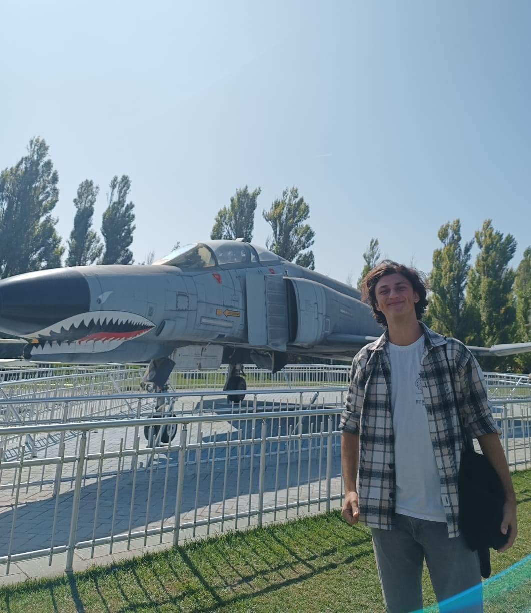

Student at Computer Education & Instructional Technology
Hello Everyone! I'm Burak. I'm a student who has in different hobbies
I'm interested in Operation Systems and Neuro-Science. I'm in METU Rowing Team.

About Me
I'm first year student at the Department of Computer Education & Instructional Technology, at Middle East Technical University. I'm good at setting up server on Linux by using LAMP (Linux-Apache2-MySQL-PHP) and experience new Linux Distrubitons. Nowadays, I'm trying to learn Web Development and Database Management.
My Skills and Experiences
- Travel
I traveled four country, Krygyztan,Kazakhstan,Kosovo & Albania. I planned to travel my second Balkan tour that includes Bosnia-Hersek, Montenegro and North-Makedonia. I travel always with cheap tickets because Trips are being more affordable for a student budget :D - Computer Skills
I worked for a tech-consultancy company, which is giving consultancy about setting up servers for Most of Ministers. - Languages
English C1
Education
- 2022 Graduated from Selim Nevzat Sahin High School
- 2022-Currently Contunining at CEIT, METU.